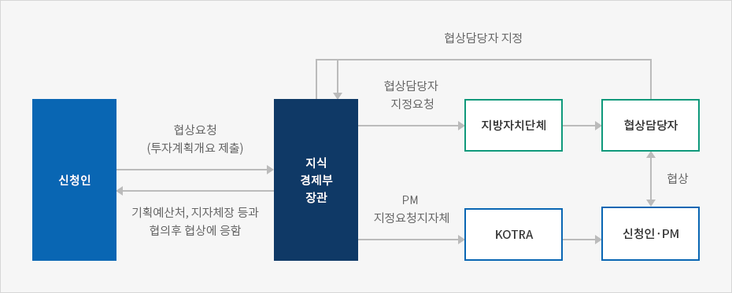
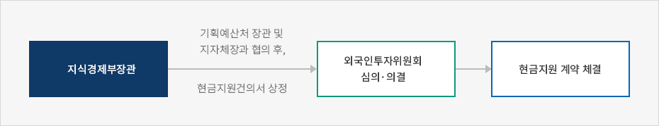

현금지원
- Home
- 투자가이드
- 투자 인센티브
- 현금지원
현금지원
정부와 지자체는 일정 요건을 만족하는 외국인투자에 대해서 당해 외국인투자의 고도기술수반여부 및 기술이전효과, 고용창출규모, 국내투자와의 중복여부, 입지지역의 적정성 등을 고려하여 공장시설 신축 등을 위해 소요되는 자금을 현금으로 지원하고 있습니다.현금지원 대상 및 용도
지원대상
현금지원 대상은 외국인투자비율이 30%이상인 외국인 투자로서 다음 조건에 부합되어야 합니다.
- 외국인투자금액이 1천만불 이상인 산업지원서비스업, 고도의 기술을 수반하는 사업 또는 부품·소재 제조업의 Greenfield형 투자(공장시설 신·증설)
- 산업지원서비스업 및 고도의 기술을 수반하는 사업과 관련된 분야의 R&D 연구시설 또는 외국인이 비영리 R&D 법인에 출연한 연구시설의 신·증설(연구전담인력의 상시 고용규모가 10인 이상)
- 투자금액 등 기준을 충족하지 못하나 국내 경제에 미치는 효과가 큰 경우 외국인투자위원회의 심의를 거쳐 현금지원 가능
- 다국적기업의 지역본부를 설립하는 경우(3개국 이상의 지역에 영업실체를 보유한 다국적기업이 2개국 이상의 지역을 관할하는 경우)
- 지역전략산업으로서 지역경제발전에 기여하는 경우
- 국내에서 생산되지 않는 품목이나 서비스를 공급하거나 선진기술 도입을 통해 국내산업의 경쟁력을 높일 수 있는 경우
지원율
- 현금지원율은 협상을 거쳐 최소 외국인투자금액(FDI)의 5% 이상을 지원하되 상한선은 비공개 산식에 의하여 결정합니다.
- R&D 센터의 경우에는 외국인투자금액(FDI) 이외에 해외에서 조달되는 연구개발비 중 규정된 용도에 사용되는 자금을 포함하여 산정합니다.(국내 조달 자금 제외)
법정 사용용도
외국인투자기업은 지원받은 현금지원금을 다음의 용도로만 사용해야 합니다.
- 고용 및 교육훈련 보조금
- 토지 매입·임대료
- 건축비
- 기반시설 설치비
- 자본재·연구기자재 구입비
이때, 외국인투자기업에 대한 임대토지 매입비는 현금지원 한도에 포함하며, 현금지원을 받으면 기존의 입지지원제도(외국인투자금액의 50%이내)에 의한 임대토지 제공 또는 분양가 차액보조는 받을 수 없습니다(택일사항).
현금지원 신청절차
1) 협상 및 지원신청 · 평가
현금지원을 받고자 하는 외국인은 지식경제부장관에게 신청서 및 투자계획서를 제출하며, 관련 공무원 및 민간전문가로 구성된 평가팀이 신청서 및 투자계획서를 평가하여 평가결과보고서를 지식경제부장관에게 제출합니다.
신청서 제출 전에도 지식경제부장관에게 협상요청이 가능한데, 이 경우 투자자는 사전협상을 통해 지원 가능성 및 지원금 등에 대하여 파악할 수 있으므로 사실상 사전협상이 정식협상절차 보다 중요하다고 할 수 있습니다.
현금지원 평가기준
- 고도기술 수반 및 기술이전 효과
- 국내투자와 중복 여부
- 지역·국가경제에 파급효과
- 프로젝트의 생존 가능성
- 고용창출 규모
- 입지의 적정성
협상 및 지원신청·평가



2) 지원결정 및 계약체결
외국인투자위원회의 심의·의결로 현금지원 결정이 가능하며(지원액 10억원 미만일 경우), 동 결정에 따라 신청인과 지식경제부장관, 지방자치단체장이 현금지원계약을 체결하여 현금지원을 이행하게 됩니다. 이때 계약기간은 지원금을 마지막으로 지급한 날부터 10년으로 하며, 계약내용은 지원금 지급방법, 임대용지 취득·임대, 지원금 사후관리 등으로 구성됩니다. 현금지원 신청에서 계약체결까지는 60일을 초과할 수 없습니다.
지원결정 및 계약체결


3) 현금지원금 지급
지원금은 현금지원이 결정된 날 일시지급 하거나 5년내 기간동안 10회 내로 분할지급할 수 있습니다. 분할지급시에는 지원금 범위 내에서 투자지출계획 이행실적 또는 지원금의 집행실적 등을 평가한 후 다음 방법에 따라 지급합니다(금액 및 시기 조정가능).
현금지원금 지급방법
| 지급항목 | 지급방법 | |
|---|---|---|
| 토지매입비 | 매매계약 체결후 중도금 또는 최종잔금으로 분할지급 | |
| 임대료 | 신청인과 임대토지 소유자간 임대차계약에 따라 지급 | |
| 공장·연구시설 건축비 | 투자지출계획의 이행실적을 평가하여 지급 | |
| 공장·연구시설에서 사업용 또는 연구용으로 사용할 자본재 및 연구기자재 구입비 |
||
| 공장·연구시설 신축에 필요한 전기·통신시설 등 기반시설 설치비 |
||
| 교육훈련보조금 | 외투기업 등록 후 5년간 지원하며, 비용을 지출한 해의 익년도 초에 지급 |
내국인 20명 초과인원에 대하여 교육훈련시, 훈련인원 1인당 100만원 이하로 6개월 범위내 지원 ※ R&D의 경우는 10인 초과인원에 대하여 지원 |
| 고용보조금 | 내국인 20명 이상 고용시 초과고용 1인당 100만원 이하로 6개월 범위내 지원. 단, 이공계 기술인력 인턴 채용시 고용 인원과 상관없이 50만원 이하로 12개월 범위내 지원 |
|
사전심사제도
사전심사제도는 국민경제적 효과가 클 것으로 예상되는 특정 외국인투자를 적극 위치하기 위하여, Invest KOREA(KOTRA)에서 사전에 프로젝트를 평가하고 지식경제부장관에게 외국인투자위원회에 상정을 건의하여 현금지원 여부를 결정하는 적극적인 기획 투자유치 운영방식입니다. 지원신청을 받아 평가하는 기존의 방식과 이원화하여 운영하며, 현금지원 여부는 신청서 접수 이전에 결정하게 됩니다.
Invest KOREA(KOTRA)는 현금지원으로 투자유치를 추진할 후보 프로젝트에 대하여 전문가 사전 검토를 거쳐 협상안을 작성하여 지식경제부장관에게 외국인투자위원회 상정을 건의합니다. 이에 대해 외국인투자위원회는 심의를 통해 현금지원 여부 및 한도를 결정하는데, 심의 후 1년 이내에 승인된 범위 내에서 투자자와 협상을 진행하게 됩니다. 협상타결 이후 계약절차 및 사후관리 등은 기존 방식과 동일하게 이루어집니다. 만약 기간 내에 투자유치가 완료되지 못하는 경우에는 지식경제부장관이 관련기술의 국내도입 및 개발현황 등을 감안하여 1년 한도 내에서 연장할 수 있습니다.
현금지원 사후관리
신청인의 책무
신청인은 직접 또는 간접적으로 당해 외국인투자기업을 관리하며, 현금지원계약상의 의무와 투자지출계획을 성실하게 이행하여야 합니다.
건물, 시설 및 장비 등 모든 자산(공사중인 자산 포함)이 만족할 만한 수준의 복구와 교체가 이루어질 수 있도록 손해배상보험 가입 또는 이에 상응하는 조치를 취하여야 하며, 현금지원을 받는 자산의 취득을 위한 계약은 공개입찰, 공인감정평가, 2개 이상의 견적서 징구 등 현금지원금이 효율적으로 사용될 수 있는 방법으로 체결하여야 합니다.
현금지원을 받은 자산을 당해 사업 이외의 목적에 사용하거나, 양도·교환·대여하거나 담보에 제공하기 위해서는 지식경제부장관의 사전 서면동의를 받아야 합니다. 또한, 현금지원금은 배당 및 로열티 등으로 유출하여서는 안되며, 당해 외국인투자기업은 사업 이외의 목적으로 하는 채무보증을 할 수 없습니다.
신청인은 계약기간 중 계약의 이행을 검토할 수 있도록 충분한 정보를 제공하여야 하며 매년 외부감사를 받은 결산보고서를 지식경제부장관에게 제출하여야 합니다.
현금지원금의 관리
토지매입비와 임대료 용도로 국가 및 지자체로부터 지원을 받아 매입한 용지는 분양계약 후 5년 내에 처분 할 수 없습니다. 만약 계약 후 10년 내에 처분하는 경우에는 매각대금 중 국가 및 지자체의 지원비율에 해당하는 금액을 환수하게 됩니다.
교육훈련 및 고용 보조금 용도의 현금지원에 대해서는 당해 보조금 지급대상 근로자를 3년 이상 고용해야 하며, 3년 내 해고시 기간비례에 따라 보조금 추징합니다(단, 이공계 인턴사원 제외).
건축비, 시설장비 구입비, 기반시설 설치비 용도의 지원금과 관련된 현금지원 계약서에 명시된 외국인투자금액보다 실제 외국인투자금액이 적을 경우 해당 비율만큼 현금지원금액을 감액 조정하게 됩니다.
현금지원 취소, 철회, 감액, 환수 등
허위·부당한 방법에 의한 신청, 계약상 의무 미이행, 계약기간 중 부도 등에 의한 사업 영위 불능 등의 경우, 현금지원을 취소, 철회하거나 지원금을 감액, 환수하는 등의 조치가 취해질 수 있습니다. 우선 계약이행을 촉구하고 소명할 수 있는 기회를 부여하며 이후 실무위원회의 심의 및 의결을 거쳐 해당 현금지원 계약 및 지원금에 대한 조치가 결정됩니다.
계약기간 중 부도 등으로 사업 영위가 불가능한 경우에는 신청인이 현금지원금을 반환하는 대신 계약기간 연장을 요청하면 특별한 사정이 없는 한 기간 연장을 허용하며, 반환해야 하는 경우 그 금액은 다음 중 큰 것으로 하게 됩니다. 이때 현금지원금의 반환의무는 외국투자가 또는 외국인투자기업이 각각 또는 공동으로 부담합니다.
- 투자지출계획 이행 전에 사업을 영위할 수 없게 된 경우, 지급한 현금지원금 전액
- 투자지출계획 이행 후에 사업을 영위할 수 없게 된 경우, 계약에서 약정한 사업영위기간에 미달하는 1개월당 현금지원 지급액의 1/60(최대 60/60)씩 가산한 금액
- 계약기간 중 약정한 최소고용 의무를 이행하지 못한 경우, 고용 못한 인원 1인당 계약에서 약정한 위약금을 곱한 금액(사업기간 연장을 통해 최소고용의무 이행 가능)